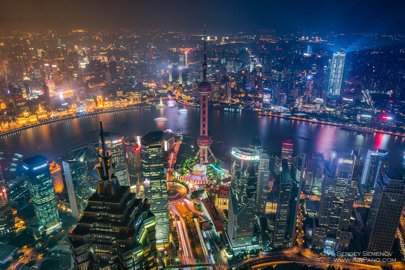
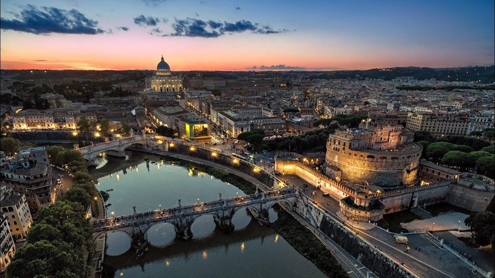
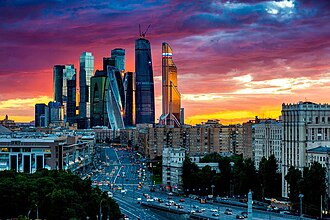
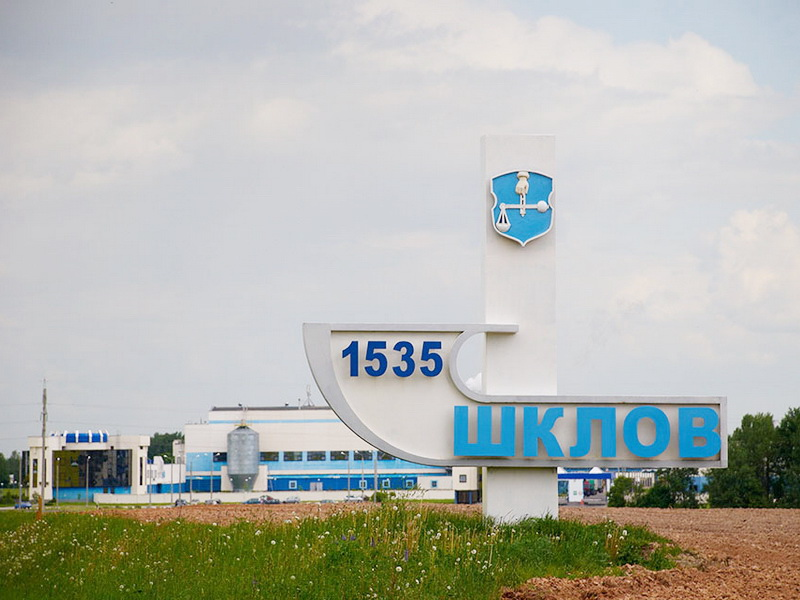
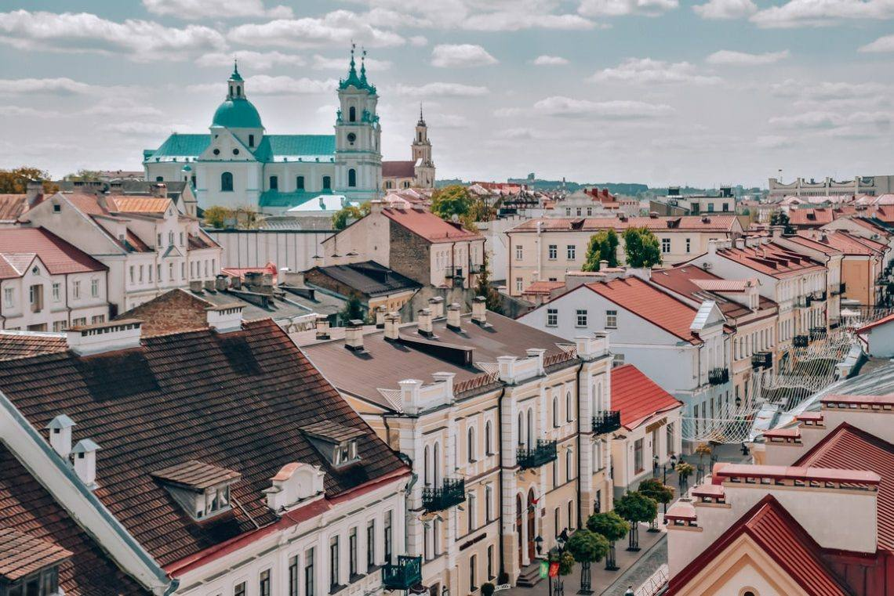

Шанхай

Тур «Великолепный Шанхай» — 5 дней / 4 ночи
Отель: The Eton Hotel (центр, рядом с метро, завтраки).
Ориентировачная цена: 10000 BYN
Программа:
1 день: Обзорная экскурсия по Бунду.
2 день: Шанхайская башня, храм Джэд.
3 день: Поезд-маглев, шопинг.
4 день: Свободное время или тур в водную деревню Чжоучжуан.
5 день: Трансфер в аэропорт.
Рим

Тур «Рим: Вечный город» — 4 дня / 3 ночи
Отель: Hotel Morgana (10 мин от Колизея, завтраки).
Ориентировачная цена: 10500 BYN
Программа:
1 день: Колизей, Римский форум.
2 день: Ватикан, Сикстинская капелла.
3 день: Фонтан Треви, Пантеон.
4 день: Завтрак и вылет.
Москва

Тур «Москва — сердце России» — 3 дня / 2 ночи
Отель: Izmailovo Gamma (стандартный номер, завтрак).
Ориентировачная цена: 1000 BYN
Программа:
1 день: Красная площадь, Кремль (соборы и Царь-пушка), ГУМ.
2 день: Третьяковская галерея + прогулка по парку Зарядье (парящий мост).
3 день: ВДНХ и музей космонавтики (по желанию).
Шклов

Тур «Шклов — вкус истории» — 2 дня / 1 ночь
Отель: Гостевой дом «Усадьба Зоричей» (стиль XIX в., завтрак).
Ориентировачная цена: 200 BYN
Программа:
1 день: Усадьба Зоричей (фаворит Екатерины II), парк с прудами и руины театра. Мастер-класс по выпечке шкловских баранок с чаепитием.
2 день: Спасо-Преображенская церковь (1767 г.) и городской рынок — закуп баранок и местных солений (огурцы, квашеная капуста). Отъезд.
Гродно

Тур «Гродно — европейская сказка» — 3 дня / 2 ночи
Отель: Kronon Park (центр, завтраки).
Ориентировачная цена: 350 BYN
Программа:
1 день: Пешеходная экскурсия по улице Советской (часы с трубачом), Старый и Новый замки.
2 день: Коложская церковь (XII в.), парк Жилибера, фарная аптека с настойками.
3 день: Свободное время, выезд.